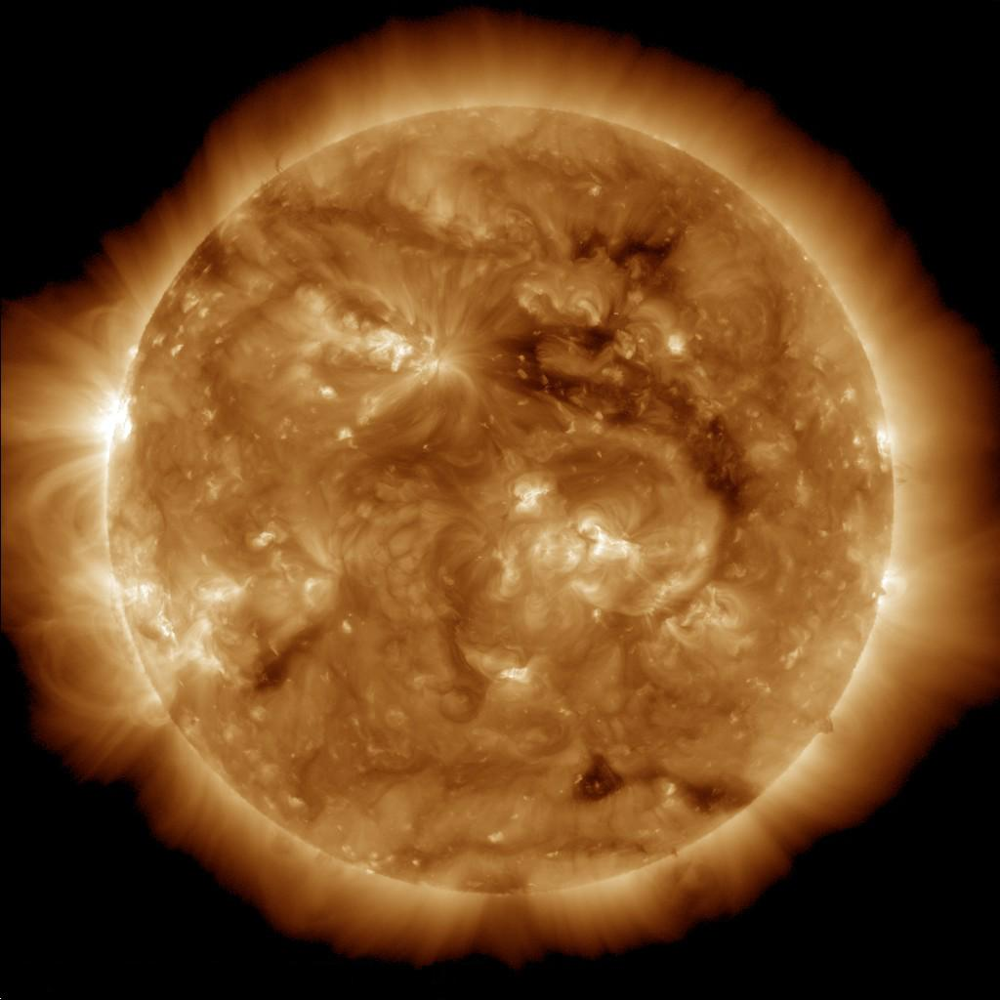
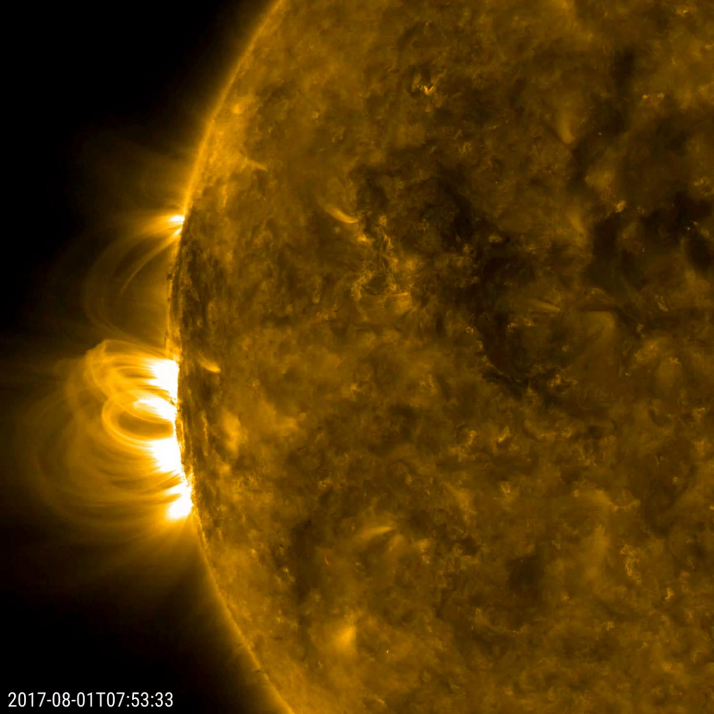

Ogólne informacje
Słonce to prawie perfekcyjnie okrągła gwiazda w centrum naszego układu słonecznego odległa o 8 minut świetlnych od Ziemi. Jego rozmiar sięga 695,000 km i jest to 109 razy więcej niż objętość Ziemi. Temperatura słońca wynosi aż 5,778°C. Jego masa wynosi tyle co 332,950 Ziemi. Jego siła grawitacyjna wynosi 274 m/s²Jak działa?
Słońce jest wielką kulą plazmy napędzanej przez fuzję nuklearną, co sekundę Słońce łączy 600 millionów ton wodoru w hel. Emituje energię o wartości 384,6 jottawatów. Aktywność Słonecznza wywołuje zorze na biegunach i dużych wysokościach geograficznych. Zakłóca też sygnały radiowe i przepływ prądu elektrycznego. Słońce ma silne pole magnetyczne, które powoduje powstawanie plan na powierzchni Słońca, rozbłyski i zmiany w wietrze słonecznym. Gdyby nie Ziemskie pole magnetyczne, Słońce zmiotło by całą atmosferę Ziemi przez co nie mogło by powstać życie.Znaczenie
Dzięki Słońcu, życie istnieje na Ziemi. Słońce pozwala roślinom na fotosyntezę z której czerpią energię. Słońce w połączeniu z odpowiednią odległością od niego ustala optymalną temperaturę na Ziemi. Słońce jednak stanowi duże zagrożenie dla elektroniki, impuls elektromagnetyczny może spalić każde urządzenie elektryczne. Gdyby coś takiego stało się we współczesnym świecie, byłoby to katastrofalne.Powstanie
Około 4.5 miliardów lat temu, fale energi krążące w kosmosie, skupiły wiele pierwiastków takich jak hel i wodór w jednym miejscu. Grawitacja spowodowała że zaczęły się zapadać w siebie i krążyć. Powstał wielki dysk pyłu z którego później uformowało się Słońce.Śmierć
Za około 5 miliardów lat, w jądrze Słońca skończy się wodór który jest jego paliwem co spowoduje jego niestabilny wzrost. Słońce pochłonie wiele planet w układzie, między innymi Ziemię po czym stanie się tak zwanym "Czerwonym Gigantem" na kilka kolejnych miliardów lat. Po kilku miliardach lat, wodór skończy się też w zewnętrzym jądrze przez co fuzja będzie zachodzić z cieższymi pierwiastkami jak tlen które nie emitują tyle energi. Słońce zmniejszy się i stanie się tzw. "Biaym Karłem". Wkrótce później Słońce eksploduje wyrzucając ogromną ilość pyłu i stanie się "Supernovą" po czym przerodzi się w czarną dziurę.

